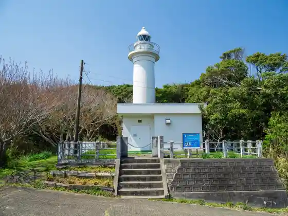
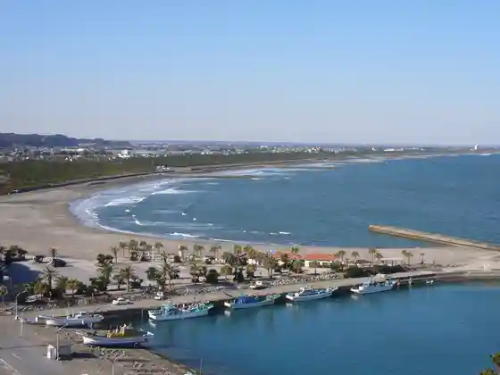
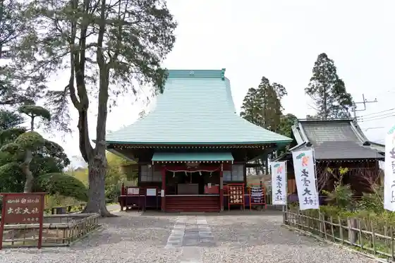

Ohara Fishing Port Minato no Asa City
Isumi, Chiba · 0470-64-4518 · Official / source link
Taito Saki Lighthouse
Isumi, Chiba · 0470-62-1243 · Official / source link

Taito Beach
Isumi, Chiba · 0470-62-1243 · Official / source link

Kuniyoshi Shrine Kazusa Izumotaisha
Isumi, Chiba · 0470-86-3774 · Official / source link

ISUMI Glamping Resort & Spa SOLAS
Isumi, Chiba · 0470-62-5151 · Official / source link
Iizuna Tera
Isumi, Chiba · 0470-87-3534 · Official / source link
Fufu Iwa
Isumi, Chiba · 0470-62-1243 · Official / source link
Hunt+ (Hantopurasu) / Shuryo Experience
Isumi, Chiba · 050-6874-1464 · Official / source link
Ohara Beach
Isumi, Chiba · 0470-62-1243 · Official / source link
Poppo no Oka
Isumi, Chiba · 0470-62-6751 · Official / source link
Kiyomizudera
Isumi, Chiba · 0470-87-3360 · Official / source link
TAKIVILLAGE
Isumi, Chiba · 080-4202-5834 · Official / source link
Ohara Nosambutsu Chokubai Tokoro (Guriinsupa Isumi)
Isumi, Chiba · 0470-60-9820 · Official / source link
Chibaken Isumi Kankyo to Bunka no Sato Center
Isumi, Chiba · 0470-86-5251 · Official / source link
Goja Hako Ohara Mise
Isumi, Chiba · 0470-63-1231 · Official / source link
Raku Do Kai
Isumi, Chiba · 090-8814-5519 · Official / source link
Goja Hako Misaki Mise
Isumi, Chiba · 0470-87-8580 · Official / source link
Nosambutsu Chokubai Tokoro Na no Hana Nichi Zai Mise (Main Shop)
Isumi, Chiba · 0470-64-0502 · Official / source link
Nosambutsu Chokubai Tokoro Na no Hana Naniwa Mise
Isumi, Chiba · 0470-63-9853 · Official / source link
Wairudokizzu Misaki Oto Campground
Isumi, Chiba · 047-087-7141 · Official / source link